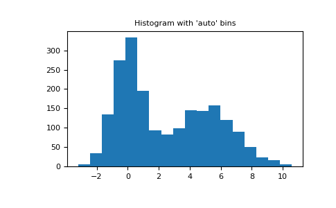

numpy.histogram¶
-
numpy.histogram(a, bins=10, range=None, normed=None, weights=None, density=None)[source]¶ Compute the histogram of a set of data.
- Parameters
- aarray_like
Input data. The histogram is computed over the flattened array.
- binsint or sequence of scalars or str, optional
If bins is an int, it defines the number of equal-width bins in the given range (10, by default). If bins is a sequence, it defines a monotonically increasing array of bin edges, including the rightmost edge, allowing for non-uniform bin widths.
New in version 1.11.0.
If bins is a string, it defines the method used to calculate the optimal bin width, as defined by
histogram_bin_edges.- range(float, float), optional
The lower and upper range of the bins. If not provided, range is simply
(a.min(), a.max()). Values outside the range are ignored. The first element of the range must be less than or equal to the second. range affects the automatic bin computation as well. While bin width is computed to be optimal based on the actual data within range, the bin count will fill the entire range including portions containing no data.- normedbool, optional
Deprecated since version 1.6.0.
This is equivalent to the density argument, but produces incorrect results for unequal bin widths. It should not be used.
Changed in version 1.15.0: DeprecationWarnings are actually emitted.
- weightsarray_like, optional
An array of weights, of the same shape as a. Each value in a only contributes its associated weight towards the bin count (instead of 1). If density is True, the weights are normalized, so that the integral of the density over the range remains 1.
- densitybool, optional
If
False, the result will contain the number of samples in each bin. IfTrue, the result is the value of the probability density function at the bin, normalized such that the integral over the range is 1. Note that the sum of the histogram values will not be equal to 1 unless bins of unity width are chosen; it is not a probability mass function.Overrides the
normedkeyword if given.
- Returns
- histarray
The values of the histogram. See density and weights for a description of the possible semantics.
- bin_edgesarray of dtype float
Return the bin edges
(length(hist)+1).
See also
histogramdd,bincount,searchsorted,digitize,histogram_bin_edgesNotes
All but the last (righthand-most) bin is half-open. In other words, if bins is:
[1, 2, 3, 4]
then the first bin is
[1, 2)(including 1, but excluding 2) and the second[2, 3). The last bin, however, is[3, 4], which includes 4.Examples
>>> np.histogram([1, 2, 1], bins=[0, 1, 2, 3]) (array([0, 2, 1]), array([0, 1, 2, 3])) >>> np.histogram(np.arange(4), bins=np.arange(5), density=True) (array([ 0.25, 0.25, 0.25, 0.25]), array([0, 1, 2, 3, 4])) >>> np.histogram([[1, 2, 1], [1, 0, 1]], bins=[0,1,2,3]) (array([1, 4, 1]), array([0, 1, 2, 3]))
>>> a = np.arange(5) >>> hist, bin_edges = np.histogram(a, density=True) >>> hist array([ 0.5, 0. , 0.5, 0. , 0. , 0.5, 0. , 0.5, 0. , 0.5]) >>> hist.sum() 2.4999999999999996 >>> np.sum(hist * np.diff(bin_edges)) 1.0
New in version 1.11.0.
Automated Bin Selection Methods example, using 2 peak random data with 2000 points:
>>> import matplotlib.pyplot as plt >>> rng = np.random.RandomState(10) # deterministic random data >>> a = np.hstack((rng.normal(size=1000), ... rng.normal(loc=5, scale=2, size=1000))) >>> plt.hist(a, bins='auto') # arguments are passed to np.histogram >>> plt.title("Histogram with 'auto' bins") >>> plt.show()
